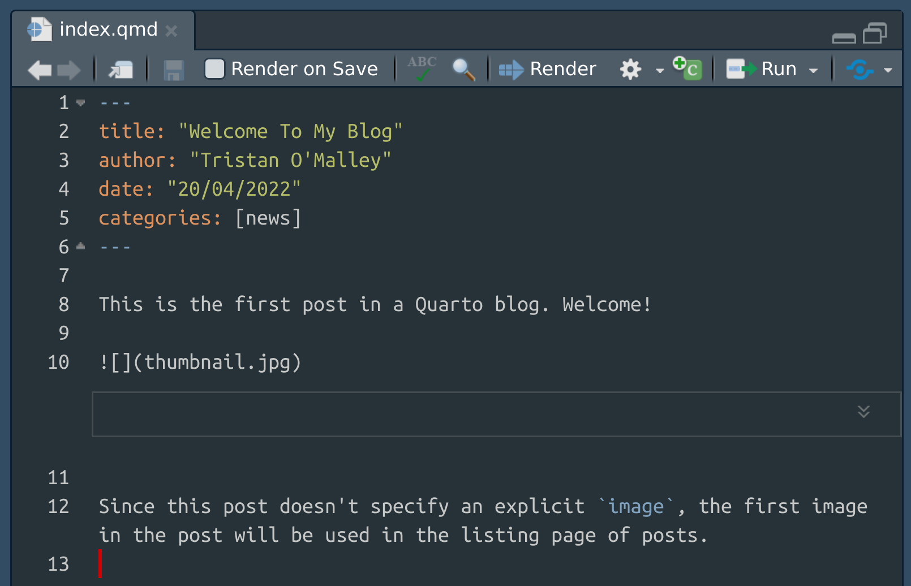

![]()
quarto helpGetting started
The very first thing I did was go read Alison Hill’s wonderful We don’t talk about quarto blog post. If you’re an R markdown user considering making the jump to quarto and haven’t already read her summary of where things are at, you won’t regret it. It’s a nice high level overview. I’d also suggest Nick Tierney’s notes on making the switch, which I found very helpful also.
Having done some background reading, I went to the get started page on the quarto website to download the installer file. I’m on Ubuntu, so for me that’s a .deb file. I install it in the usual way from the command line:
sudo dpkg -i quarto-0.9.282-linux-amd64.debNow that I have quarto installed, I can use it to create a blog. My old distill blog existed in a project folder that I’d imaginatively named distill-blog, so I’m going to keep to tradition and create the quarto version in an equally boring project folder called quarto-blog. There is a page on the quarto website that walks you through the process for creating a blog, which I dutifully follow. From the terminal, I use the quarto create-project command:
quarto create-project quarto-blog --type website:blogCreating project at /home/danielle/GitHub/sites/quarto-blog:
- Created _quarto.yml
- Created index.qmd
- Created posts/welcome/index.qmd
- Created posts/post-with-code/index.qmd
- Created about.qmd
- Created styles.css
- Created posts/_metadata.ymlComing from an R markdown background, this is very familiar:
- The files with a
.qmdextension are the quarto markdown documents. These contain source code for the blog posts (the two files in thepostsfolder), the home page (theindex.qmdfile in the project root folder) and a standalone “about me” page for the blog (theabout.qmdfile). - The files with a
.ymlextension are the YAML files used to configure the blog. I didn’t notice this at first, but the fact that there are two of them is important. The_quarto.ymlfile is used for settings that will apply across the entire site, but you will often want to configure settings that only apply to your blog posts. Those can be set by editing theposts/_metadata.ymlfile. - The
styles.cssfile can be used to specify custom CSS rules that will apply to the whole site. I’ll talk more about styles later.
Rendering posts
There are several different ways to interact with quarto. For example, later in the post I’ll talk about the quarto command line interface which allows you to work with quarto without going through R or RStudio. However, when getting started I tried to keep things simple, and went with the option that was most familiar to me: I used RStudio.
To do this, it’s convenient to have an RStudio project for my blog. Using the RStudio file menu, I create a new project from an existing directory (i.e., my quarto-blog folder), which creates a quarto-blog.Rproj file and other infrastructure needed to work with my new quarto blog as an RStudio project. Once that’s done, I can open up a quarto file in the RStudio editor and I see a familiar looking interface.

I can click on the “Render” button to render a single page, or alternatively I can go to the RStudio build pane and select the “Render Project” option to build the entire site. By default, the blog builds into the _site folder, so if you open up _site/index.html in a web browser, you can browse the static site easily enough.
Playing around
First observations:
- feel is like distill, not blogdown: it doesn’t use hugo so it is simpler
- the look of the site is different to distill: uses bootstrap, like simple R markdown websites
- overall seems like a lot of good features from the three systems have made it across
Customise:
- Tinker with _quarto.yml file: edit blog title, twitter, github and bootswatch theme.
- I don’t like the font but I’ll fix it in CSS later
New post:
- Create new folder
_posts/2022-04-20_porting-to-quartoand fileindex.qmd - Add basic yml metadata
- Start writing this post, and build!
Can I add footnotes?1 Can they be nested?2
Can I add asides?
Also yes
I used to use the <aside> html tag for this but now:
see also https://quarto.org/docs/authoring/article-layout.html
:::{.column-margin}
Also yes
:::Notes on YAML headers
The YAML headers used for blog posts are a little different in quarto than their equivalents in distill were, and it takes me a little bit of thought to decide how I want to adapt the YAML headers from my old R markdown posts for the new quarto blog. Here’s where I landed. First, some fields require almost no changes:
- The
titlefield is unchanged. That was an easier one! - The
datefield is essentially unchanged, except for the fact there seems to be a tiny bug in date parsing for blogs that I’m sure will vanish soon. If you’re using ISO-8601 date formats likedate: "2022-04-20"it will be fine.3 - The
categoriesfield takes a list of values, which (I think?) is no different to what it looked like before. To be honest I don’t remember because my old blog didn’t use them. I’ve started now.
Other changes are superficial:
- The
descriptionfield that I used on my old blog still does what it used to: it provides preview text on the listing page, and a summary at the top of the file. However, there is also asubtitlefield that you can use for this purpose, and the output has the same look and field as my old descriptions, so I switched all my old description fields tosubtitleentries. - To specify a preview image associated with a blog post, use the
imagefield (e.g., something likeimage: thumbnail.jpg) instead of thepreviewfield from distill. - There is a new
licensefield that replaces thecreative_commonsfield from distill. At the bottom of this post you’ll see a “Reuse” appendix that links to a license file. To generate this, I’ve included alicense: "CC BY"line in the YAML.
Other changes are a little deeper:
In distill it is possible to specify the
authorfield in a lot of detail, mirroring the academic convention of listing an authors affiliation alongside their employer, orcid record, and contact details. Quarto supports this also, though the tags have changed slightly:orcid_idis noworcid, for example. There’s an example of this shown a little later in the post.Specifying the table of contents is slightly different. Just like in distill, you can turn on the table of contents by including
toc: trueas a line in the YAML header, and set thetoc-depthfield to determine how detailed the table of contents should be. But there are new options. You can customise the text that appears above the table of contents, and the location in which it appears. I’ve been boring and gone with some standard options:toc-title: Table of contentsandtoc-location: left.One feature in distill that I like is that it generates a citation for each post. You can do that in quarto too, and you’ll see at the bottom of this post that I’ve used that feature here. However, quarto manages this in a different way to distill, and uses a YAML version of citation style language (CSL) formatting to define the citation. To see how it works, you can read through the quarto page on citations. It’s a little more elaborate than the distill version, but much more flexible. For this post, the corresponding lines of YAML would look like this:
citation: type: "article-journal" container-title: "Notes from a Data Witch" url: "https://blog.djnavarro.net/posts/2022-04-20_porting-to-quarto"The title, date, and author information are inherited by the citation.
Creating a new post
Time to get to work at transforming the starter blog into a quarto version of my distill blog. My first step is to delete the two posts that came with the starter blog, and then create this one. A folder with an index.qmd file is the bare minimum you need to get started with a new post.
I suppose there are other ways do to this but what I actually did at the time was create the the folder and an empty file, and then started editing. I was working at the terminal at the time (for reasons known but to god) so these were the commands I used:
mkdir posts/2022-04-20_porting-to-quarto
touch posts/2022-04-20_porting-to-quarto/index.qmdTo be honest this is overkill. What I could have done instead, had I been looking at RStudio rather than the terminal, is use the “New File” option in the file menu and then select the “Quarto Doc” option. That creates a new untitled quarto document that you can save to the appropriate location.
Inheriting YAML settings
A handy feature in quarto is that YAML fields are inherited. This post has its own header that contains the following – and only the following – fields:
# Title and subtitle
title: "Porting a distill blog to quarto"
subtitle: |
I have moved this blog from distill over to quarto, and
taken notes. A year after starting the blog, this promises
to be an interesting reproducibility test
# Other metadata
date: "2022-04-20"
categories: [Quarto, Blogging, Reproducibility]
image: "img/anete-lusina-zwsHjakE_iI-unsplash.jpg"
citation:
url: "https://blog.djnavarro.net/porting-to-quarto"That’s a little peculiar, because a lot of the metadata needed to specify this post is missing. The reason for that is that I’ve placed fields that don’t vary across posts in the posts/_metadata.yml file. Those fields are inherited by every blog post. This is the entire contents of my post metadata file:
# Freeze computed outputs
freeze: true
# Enable banner style title blocks
title-block-banner: true
# Enable CC licence appendix
license: "CC BY"
# Default for table of contents
toc: true
toc-title: Table of contents
toc-location: left
# Default knitr options
execute:
echo: true
message: true
warning: true
# Default author
author:
- name: Danielle Navarro
url: https://djnavarro.net
affiliation: Voltron Data
affiliation-url: https://voltrondata.com
orcid: 0000-0001-7648-6578
# Default fields for citation
citation:
type: "article-journal"
container-title: "Notes from a Data Witch"That explains a lot, but if you’re looking closely you’ll realise that there’s nothing in these fields specifying the output format! In R markdown I’d have had an output field that specified this, but in quarto the relevant field is called format. Because the output applies to the entire site (all pages, not just the blog posts), that part of the YAML header is in the _quarto.yml file. The relevant lines of that file are:
format:
html:
theme: ember.scss
css: styles.cssI’ll come back to this later. For now it’s enough to recognise that this indicates that all pages on this site should be rendered to HTML documents, and using the ember.scss and styles.css files specify the blog style.
Converting my old posts
The time has come for a little manual labour. Although quarto is compatible with most existing R markdown and I could probably get away with leaving them untouched, in the longer term I’m expecting that I’ll be moving across languages so it appeals to me to take this opportunity to port everything over to quarto now. Renaming all the index.Rmd files to index.Rmd files is easy enough, and can be done programmatically, but most of my edits required a small amount of manual tinkering with each post. Not a lot, because it was mostly a matter of renaming a few YAML fields, but it would probably have been a little bit of effort to try to automate the whole process. Given that there are only 20 or so posts that need to be ported, I decided it was easier to do it manually than to try to write a script to automate the task. I was able to get through it in an afternoon.
Styling the new blog
Up to this point, the adoption of quarto has felt very “distill-like”. The structure of the blog feels familiar from distill, the YAML headers are similar in spirit (if different in the particulars), and so on. When it comes to customising the appearance of the blog, it’s not very similar to distill at all, and feels more similar to simple R markdown sites. Quarto websites are bootstrap based, and as discussed on the quarto theming page, they come with the same bootswatch themes that you might be familiar with from R markdown. For example, if you decide like I did that you would like a very plain white theme, you could choose the “litera” theme. To apply this to your blog, all you’d have to do is make sure your _quarto.yml file contains the following lines:
format:
html:
theme: litera
css: styles.cssWhat this does is assert that output will be rendered as HTML objects using the litera bootswatch theme, and applying any custom CSS rules that you add in the styles.css file.
One very nice feature of quarto, if you’re comfortable using SASS to define styles and know something about how the bootstrap SASS files are organised,4 is that it allows you to write your own .scss file to define your blog theme more precisely, giving you access to bootstrap parameters and so on. I would strongly recommend reading about the quarto theming system before tinkering with this aspect yourself, but if you are more knowledgeable (or more foolish) than I, here’s how I set my blog up. First, instead of referring to the litera theme, the YAML in my _quarto.yml file points at my own custom .scss file:
format:
html:
theme: ember.scss
css: styles.cssThe contents of the ember.scss file are as follows:
/*-- scss:defaults --*/
// use litera as the base
$theme: "litera" !default;
// import google fonts
@import 'https://fonts.googleapis.com/css2?family=Atkinson+Hyperlegible:ital,wght@0,400;0,700;1,400;1,700&display=swap';
@import 'https://fonts.googleapis.com/css2?family=Fira+Code:wght@300;400;500;600;700&display=swap';
// use Atkinson Hyperlegible font if available
$font-family-sans-serif: "Atkinson Hyperlegible", -apple-system, BlinkMacSystemFont, "Segoe UI", Roboto, "Helvetica Neue", Arial, "Noto Sans", sans-serif, "Apple Color Emoji", "Segoe UI Emoji", "Segoe UI Symbol", "Noto Color Emoji" !default;
/*-- scss:rules --*/
// litera is serif by default: revert to san-serif
p {
font-family: $font-family-sans-serif;
}As you can see, right now my customisation really doesn’t do much other than make some very minor tweaks on the litera theme, but the potential is there to do so much more than I have in setting up this blog. I plan to tinker with this more later on!
Adding an RSS feed
My old distill blog had an RSS feed, and while I acknowledge that it’s increasingly an esoteric feature that most folks don’t use, I have a fondness for RSS. Quarto supports this, but it’s not enabled by default. What you need to do is edit the YAML in the index.qmd file that corresponds to your homepage, because that’s generally where you have your primary listing of posts. In it, you’ll see a listing field. All you need to do is add feed: true underneath and there will now be an RSS feed for your site:
title: "Notes from a data witch"
subtitle: A data science blog by Danielle Navarro
listing:
feed: true
contents: postsThe quarto section on feeds has more information on this.
Deploying the site
Preparing the site to be deployed was relatively painless. It’s useful to read the quarto website options page before you do this, because it mentions a lot of settings you may want to alter in your _quarto.yml file. For example, you can customise the navigation bar, the social media preview images, the search functionality and so on. Once you’re getting to the point of being ready to deploy it’s worth checking those little details out.
But as for the deployment process itself, there’s not a lot to say. The quarto deployment page discusses several options for how you can do this. Most of my websites are deployed either through GitHub Pages or through Netlify. This one is a Netlify site, so I’ve followed the instructions there and everything went smoothly. However, this does bring me to another topic…
Netlify redirects
I’ve structured my blog in a particular way. Like the default quarto blog, all the posts live in the posts folder, and they’re named in a systematic way: they have an ISO-8601 formatted date first, and then a semantic slug. So the full URL for this blog post is:
blog.djnavarro.net/posts/2022-04-20_porting-to-quarto
That’s convenient for archiving purposes and for keeping everything nicely organised in my project folder, but it’s also a little clunky for sharing links. In practice, the “posts” part is a bit redundant, and I’m never going to use the same slug twice, so it’s handy to set it up so that there’s also a shorter URL for the post,
blog.djnavarro.net/porting-to-quarto
and that this URL automatically redirects to the longer one. Since I’m intending to deploy this blog to netlify, what I need to do is ensure that whenever the site builds, a _redirects file is created within the _site folder. This file needs to have one line per redirect, listing the “redirect from” path first, followed by the “redirect to” path. Here’s what that line looks like for this post:
/porting-to-quarto /posts/2022-04-20_porting-to-quartoI have no intention of adding these lines manually, so what I did instead is add an R chunk to the index.qmd file corresponding to the blog home page, with the following code:
# list names of post folders
posts <- list.dirs(
path = here::here("posts"),
full.names = FALSE,
recursive = FALSE
)
# extract the slugs
slugs <- gsub("^.*_", "", posts)
# lines to insert to a netlify _redirect file
redirects <- paste0("/", slugs, " ", "/posts/", posts)
# write the _redirect file
writeLines(redirects, here::here("_site", "_redirects"))Every time the site gets rebuilt – which usually involves rebuilding the home page since that’s the one that contains the post listing – the _redirects file gets refreshed.
The quarto CLI
About half way through the process of tinkering with my old posts to be suitable for the quarto blog, I decided to stop using RStudio for the rendering, and spent a little time familiarising myself with the quarto command line interface. I haven’t made any particular decisions about what my long term workflow with quarto is going to look like, but I did find it helpful to get a feel for the concept of quarto as a standalone install. I’m not going to go into detail here, but just briefly: at the terminal I can see that I have some help options,
Usage: quarto
Version: 0.9.282
Description:
Quarto CLI
Options:
-h, --help - Show this help.
-V, --version - Show the version number for this program.
Commands:
render [input] [args...] - Render input file(s) to various document types.
serve [input] - Serve an interactive document.
create-project [dir] - Create a project for rendering multiple documents
preview [file] [args...] - Render and preview a Quarto document or website project. Automatically reloads the browser when
convert [input] - Convert documents to alternate representations.
capabilities - Query for current capabilities (output formats, engines, kernels etc.)
check [target] - Check and verify correct functioning of Quarto installation and computation engines.
inspect [path] - Inspect a Quarto project or input path. Inspecting a project returns its config and engines.
tools [command] [tool] - Manage the installation, update, and uninstallation of useful tools.
help [command] - Show this help or the help of a sub-command.
From there I can check the help documentation for the quarto render command by typing the following,
quarto render helpand so on. Browsing this documentation in addition to all the excellent content on the quarto website is a useful way of finding additional options. If I wanted to render the current post, and my terminal was currently at the project root folder (i.e., my quarto-blog folder), I can render it as follows:
quarto render posts/2022-04-20_porting-to-quarto/index.qmdThe ability to do this cleanly from the terminal seems like a handy feature of quarto, though I’ll admit I am not yet sure how I’ll use it.
Epilogue
Last updated
2022-04-24 15:53:21 AEST
Details
Footnotes
Yes↩︎
In case you’re interested: the “Welcome to My Blog” post in the starter blog lists the date as
date: "20/04/2022", which gets parsed as a string literal when the post gets built (i.e., the post date shows up as “20/04/2022”), sensibly enough. However, when you build the entire site it renders as “May 4, 2023”.↩︎Which, frankly I do not, but I am also foolish and will try things anyway↩︎
Reuse
Citation
BibTeX citation:
@article{navarro2022,
author = {Danielle Navarro},
title = {Porting My Distill Blog to Quarto},
journal = {Notes from a Data Witch},
date = {2022-04-20},
url = {https://blog.djnavarro.net/porting-to-quarto},
langid = {en}
}
For attribution, please cite this work as: